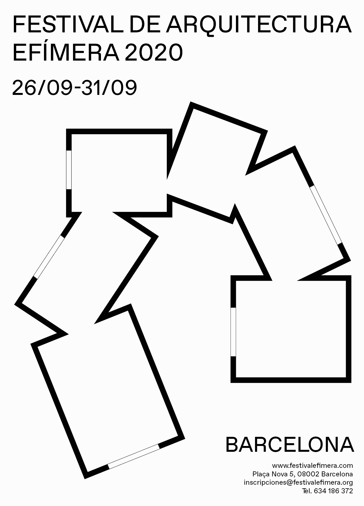
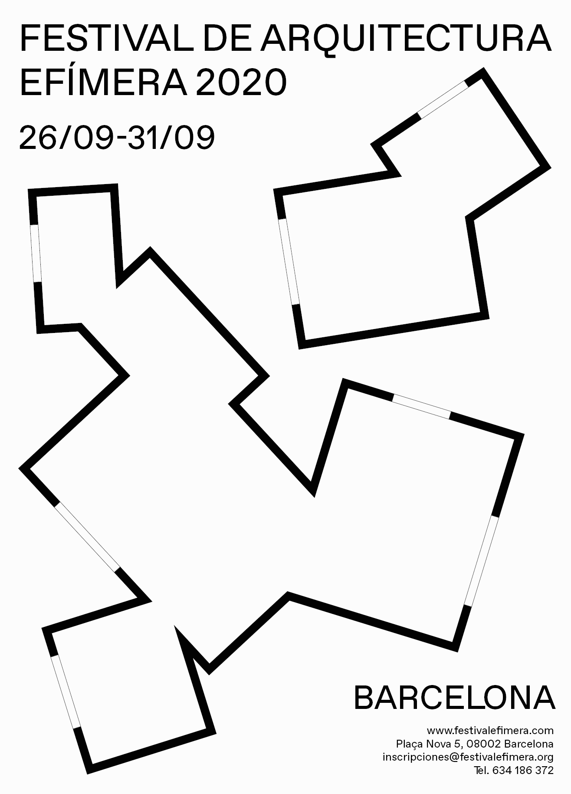
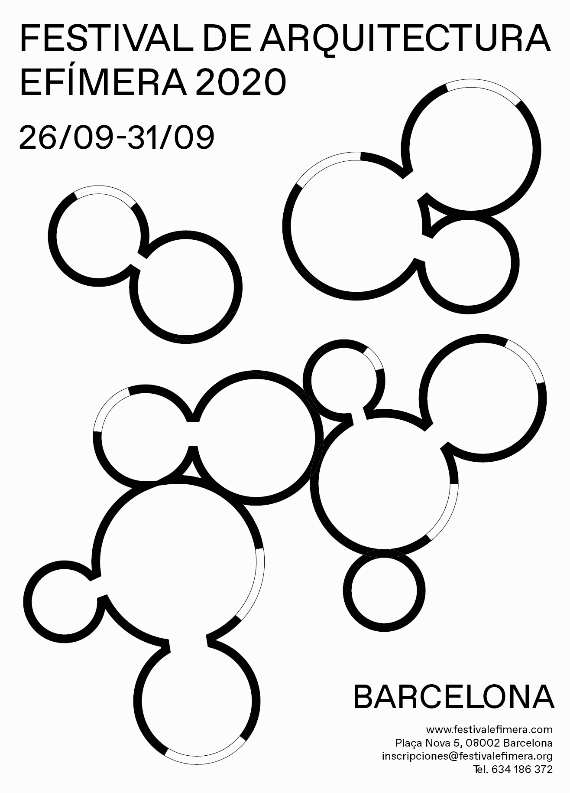
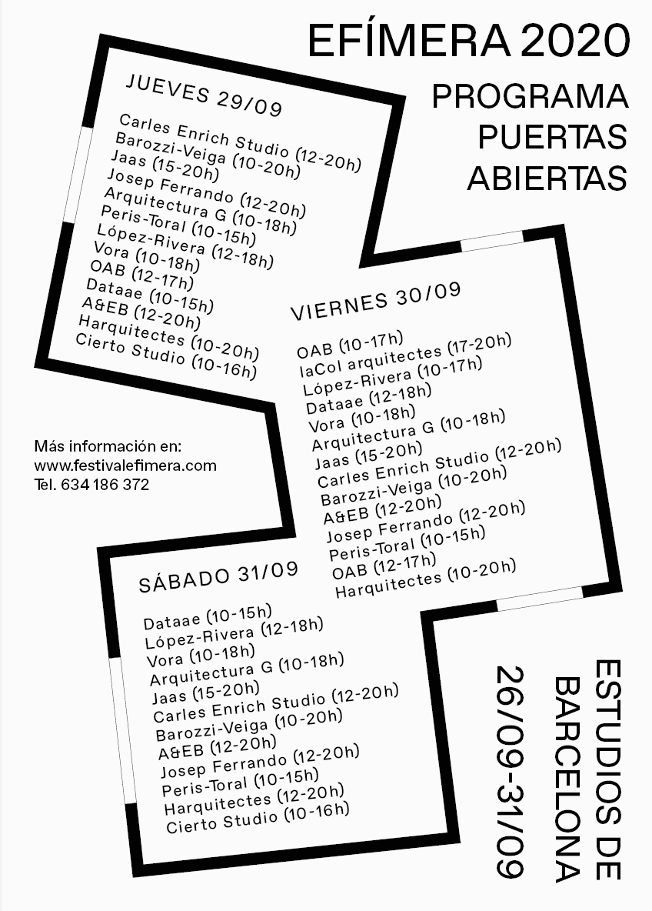
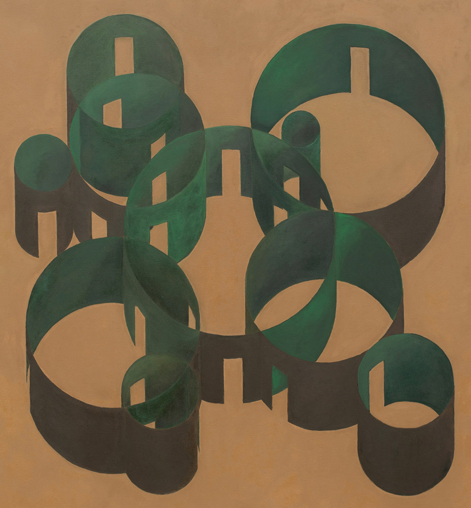

My name is Silvia and this is my portfolio: a multidisciplinary mix of graphic design,
code and motion. If I have to define myself by the things I have studied I am an environmentalist,
a graphic designer and I am currently learning p5js, a JavaScript library for creative coding.
I live in Barcelona and you can find out more about my studies and professional experience on my
Linkedin.
I won a Bronze Laus Award for the final master's project done at ELISAVA in 2020 and I am currently open to work.
contact: sdecastro11@gmail.com
626595940






Identidad del festival de arquitectura efímera que tiene lugar en Barcelona para
dar a conocer a arquitectos emergentes. El concepto sobre el cual se desarrollan las instalaciones y la identidad
es la agregación. Proyecto realizado junto con @jaumealeman dentro del MDG de ELISAVA.
Ref:
Vara pavilion - Pezo von Ellrichshausen
